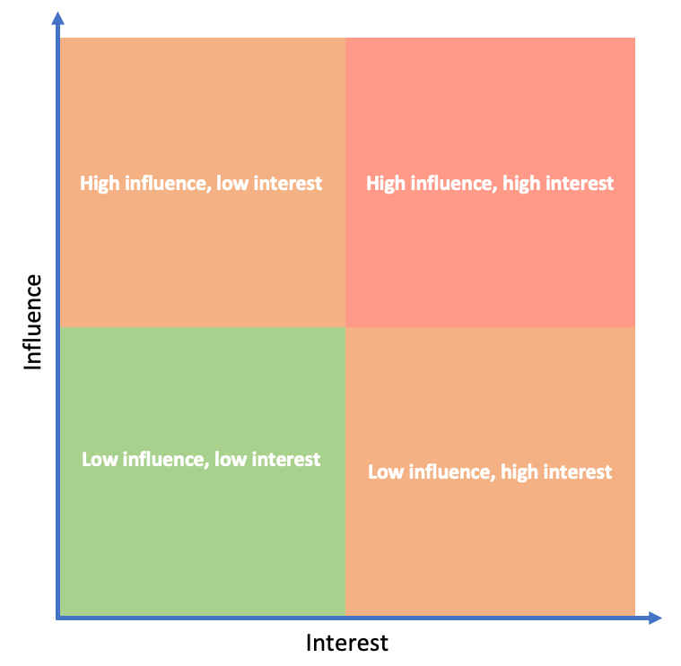

4. How to engage with stakeholders I: stakeholder identification and analysis
This session will introduce you to identifying stakeholders for evidence syntheses. It will also introduce the importance of ‘stakeholder analysis’ or 'stakeholder mapping', a way to understand stakeholders, their motivations, and their relation to the systematic review in hand. You'll then undertake an exercise to analyse/map stakeholders based on a set of briefs for a hypothetical group of stakeholders, using an interest-influence matrix.
Learning objectives
- To understand methods available for identifying and selecting stakeholders
- To appreciate the benefits of stakeholder analysis/mapping
- To understand methods for analysing and mapping stakeholders
- To appreciate the need for balance in stakeholder groups
- To appreciate the benefits of phasing stakeholder engagement
- To be aware of the importance of planning invitations, engagement and key considerations in the engagement process
- To gain experience of analysing stakeholders in a hypothetical case study
To begin, watch the following presentation.
You can find the lecture handouts here.
Practical exercise
In this exercise, you will gain some hands-on experience of analysising or mapping stakeholders for a hypothetical case study systematic review.
You have been tasked helping to analyse a set of stakeholders relevant to a systematic review investigating the societal and environmental impacts of mining in the Arctic. The review team have already identified what they believe is they main group of stakeholders. For each of these stakeholders, you have been provided with a page of background information:
- ArctMetal Mining Corporation
- Cripula Municipality
- Global Animal Foundation
- Indigenous Parliament of the Nordics
- Meishno Indigenous Community
- MetalData
- Midsommarkransen Youth Environmental Organisation
- Not in Our Back Yard
- Nyheter Idag
- SEMA
- Smith University
Read through the background documents, and try to fill in this form for as many stakeholders as you can - it will help you to better understand all of the stakeholders together using a standard template.
Once you've filled the form in for at least 4 stakeholders, try to place each of them into this impact-influence matrix. Try to think about how the stakeholders compare in terms of their potential influence/impact in helping you to achieve your goals in the review and their interest in the review. You'll need to save/download a copy to be able to edit.
Move to the next module!